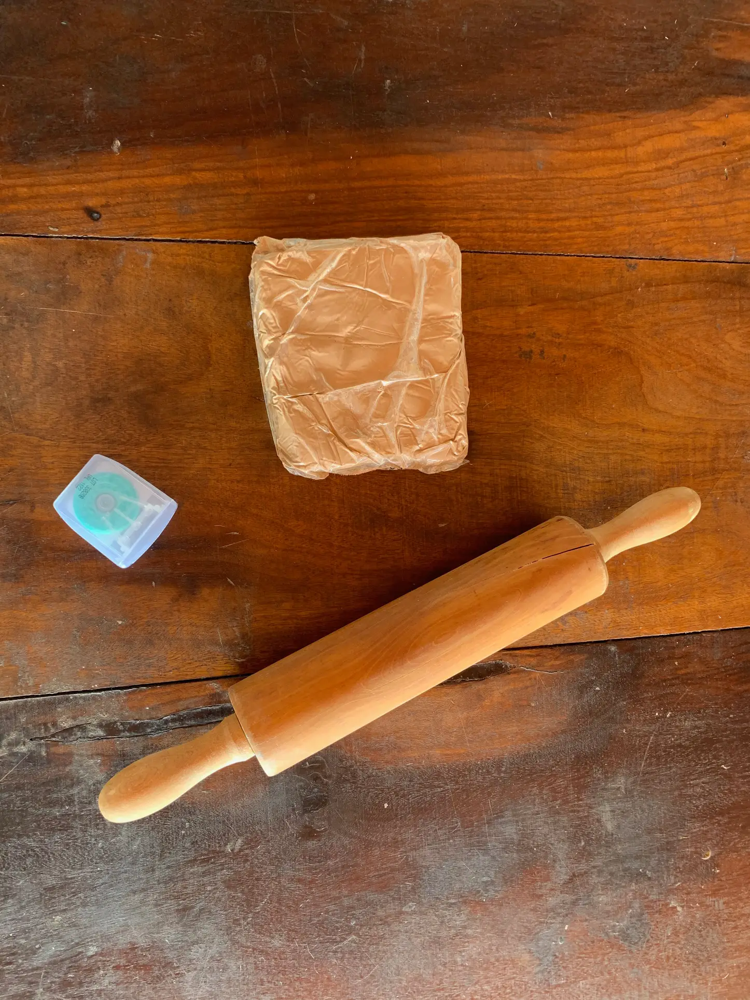
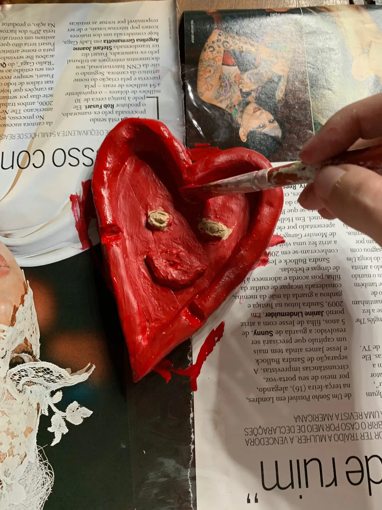

Description
Ashtrays are usually made of glass, stone, ceramic, metal, and heat-resistant plastic—that is, any fire-resistant material. They have cavities with high boundaries. The cavity stores the ash that is flicked off from a cigarette or a cigar. Chain smokers usually prefer an ashtray in practically every corner of their house. However, some people want to keep ashtrays as decorations in their homes or for friends and relatives who smoke.
Are you bored of the simple ashtrays that you can buy? Do you want to have a unique and cool ashtray? Creating a custom cigarette ashtray has never been easier! Even though these ashtrays are for storing ashes, we can certainly enhance the beauty of the corner where they are placed. However, in this DIY project, we must ensure the material used is fireproof. We definitely don't want anything to catch fire! So, our task for today is a DIY ashtray. We want to create an attractive design that is not only suitable for home use but can also be used as an outdoor ashtray. Before we start, we should take care of the material.
1) Clay is our hero of today's DIY. Yes, you guessed it right! We will make our ashtray out of clay.
2) Dental floss: To cut the clay into smaller pieces.
3) Rolling pin: To stretch the clay.
4) A piece of plastic: Put this over the clay when rolling to prevent the clay from sticking to the rolling pin and to get a flat surface.
5) Sharp knife: To cut the clay into the desired shape.
6) Pencil: To sketch the design of the ashtray.
7) Acrylic paints: For painting the ashtray.
8) Varnish: To give the ashtray a shiny finish.
Let's start making a DIY ashtray. Follow the steps carefully to get a cool ashtray.
Materials
Clay
Rolling pin
A plastic sheet
Dental floss
A sharp knife
Pencil
Oven
Acrylics
Varnish or lacquer
Step 1: Get the material
Check that you have all the materials together. We are using plain, colourless clay. You can choose to use coloured clay. However, we recommend a neutral shade, as it will be easier to paint it with the colour of your choice in the following steps.
Step 2: Cut the clay into smaller pieces
Use dental floss and cut the large piece of clay into smaller pieces. Make sure the size of the clay is large enough to form a thick base for your ashtray.
Step 3: Mix water with clay
If the clay is too dry, mix it with a little water. Do not use too much water; otherwise, it will become sticky and difficult to mould into any shape.
Step 4: Use a rolling pin
Place the clay on a flat surface, cover it with a thin sheet of plastic and use a rolling pin. Don't overdo this step, as the bottom of the ashtray must retain a certain thickness.
Step 5: Give the DIY clay ashtray a shape
Using a pencil, carefully sketch the outline of the design you want for your ashtray. Here, we chose a heart-shaped ashtray. Then, cut it out with a knife. Remove the excess clay. The base of the ashtray is now finished.
Step 6: Roll the excess clay
Use the excess clay and form two rolls. Make sure that both rolls are the same thickness.
Step 7: Build the walls of the ashtray

Carefully place the two rolls on either side of the heart-shaped base. Make sure the thickness of the two rolls is even. It will give you a symmetrical design.
Step 8: Attaching the ashtray
Moisten your fingertips and smooth out the rough edges. If there are any cracks or gaps, fix them.
Step 9: Make holes for the cigarettes
The next step is to make holes for the cigarettes. Take a pencil and press it against the edges made with clay rollers. These will later serve as cigarette holders.
Step 10: Add your magical touch
Since we are customising an ashtray, we can add unique elements. The ashtray we made is heart-shaped, which we consider a face. Now, we will form the eyes and mouth with tiny pieces of clay and attach them to the face of the ashtray.
Step 11: Baking the ashtray
Now, it's time to bake the DIY clay ashtray. You can put it in the oven at 203 degrees Celsius for 10 minutes. Leave the door slightly open. After 10 minutes, check the ashtray and put it in the oven for another 10 minutes. Continue this process until you get a rock-solid ashtray.
Step 12: Paint the ashtray
After the clay is dry, it's time to paint the DIY ashtray. We're using acrylic paints, but you can use any other paint of your choice. You can even consider a homemade resin ashtray. It's absolutely easy to make, stylish, and affordable at the same time. We will also colour the tiny elements we added for some details, such as the eyes and the mouth.
Step 13: Final touches
To make the ashtray look a little more vibrant, we coloured the sides yellow. Now, this piece looks absolutely stunning.
Step 14: Time for varnishing
Spread a generous amount of varnish on the ashtray to give it a glossy finish. Hooray! You have successfully completed your DIY ashtray.
Now, you can make a unique set of cigarette ashtrays just for yourself.
Cleaning instructions for future use: Do not wash this ashtray under running water. Instead, use a damp cloth to wipe it.